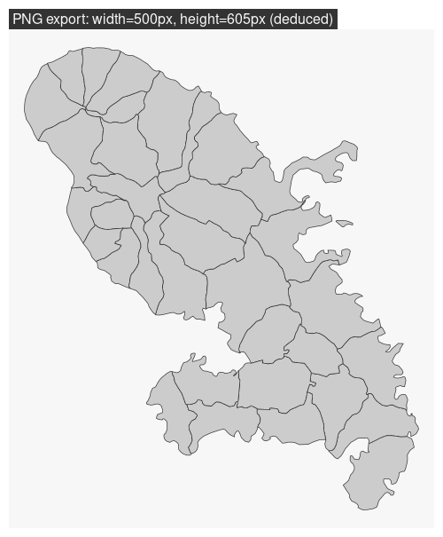
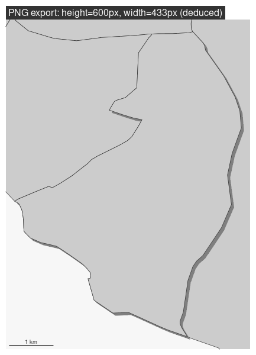
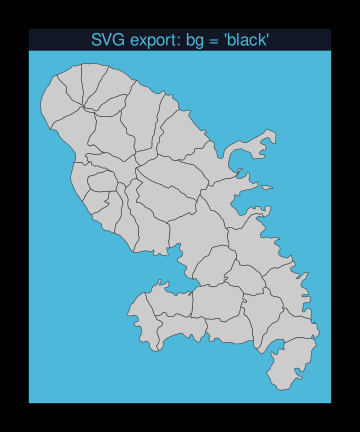

How to Export Maps
Timothée Giraud
2022-01-24
Source:vignettes/web_only/how_to_export_maps.Rmd
how_to_export_maps.Rmdmf_export() exports maps in PNG or SVG formats.
The exported map width/height ratio will match the one of a spatial object.
If width is specified, then height is deduced from the width/height ratio of x, figure margins and title size.
If height is specified, then width is deduced from the width/height ratio of x, figure margins and title size.
Additionally, mf_export() can be used to set a theme, to extend the map space on one or several side of the figure, or to center a map on a specific area.
Simple Export
In this example we only set the width of the exported figure.
library(mapsf)
#> Loading required package: sf
#> Linking to GEOS 3.8.0, GDAL 3.0.4, PROJ 6.3.1; sf_use_s2() is TRUE
mtq <- mf_get_mtq()
mf_export(x = mtq, filename = "fixed_width.png", width = 500)
mf_map(mtq, add = TRUE)
mf_title(txt = "PNG export: width=500px, height=605px (deduced)")
dev.off()
Note that we have to set add = TRUE to the first layer plotted. Internally, mf_export() start a device (PNG or SVG) with a specific dimension (figure size) and extent (x extent).
Export with Extra Space on the Figure
Here we have added some space on the right side of the plot (50% of x width).
Center the Map on a Specific Area
In this export, the map is focused on a specific spatial object. height is fixed and width is deduced.
target <- mtq[5,]
mf_export(x = target, filename = "fixed_height_centered.png", height = 600)
mf_map(mtq, add = TRUE)
mf_shadow(target, add = TRUE)
mf_map(target, add = TRUE)
mf_title(txt = "PNG export: height=600px, width=433px (deduced)")
mf_scale(1, pos = "bottomleft")
dev.off()
Other Parameters
mf_export() can produce SVG figures (with export = "svg") and use other parameters of png() or svg() functions (e.g. res, bg or family).
mf_export(x = mtq, export = "svg", filename = "fixed_width.svg",
width = 5, theme = "nevermind", bg = "black")
#> "export" is deprecated.
mf_map(mtq, add = TRUE)
mf_title(txt = "SVG export: bg = 'black'")
dev.off()
Side Effects
If a theme is set before an mf_export() call, the theme is applied to the export.
mf_theme('agolalight')
mf_export(x = mtq, filename = "theme_before.png", width = 200)
mf_map(mtq, add = TRUE)
mf_title(txt = "agolalight")
dev.off()
If a theme is set before or within an mf_export() call, the theme is also applied after the export.
mf_export(x = mtq, filename = "theme_within.png", width = 200,
theme = "darkula")
mf_map(mtq, add = TRUE)
mf_title(txt = "darkula")
dev.off()
#> png
#> 2
mf_map(mtq)
mf_title("Still 'darkula'")If a theme is set between an mf_export() call and dev.off(), the theme is not applied correctly.